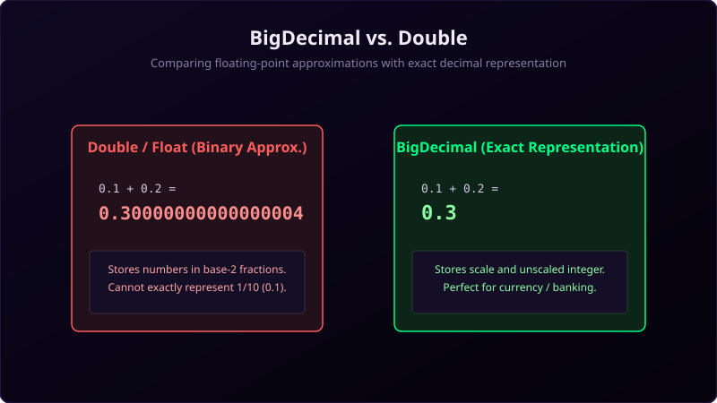

In Java, primitive types like double and float are binary floating-point numbers. They are designed for fast scientific and graphics computations but cannot represent base-10 decimals like 0.1 exactly. Doing math on them leads to weird precision discrepancies like 0.1 + 0.2 = 0.30000000000000004.
For financial systems, accounting ledger entries, or tax calculations, these tiny rounding errors build up and lead to significant discrepancies. The standard solution in Java is **BigDecimal**.

Imagine you are measuring precise cuts for a wooden model airplane:
If you use a fat permanent marker (double), the ink line is thick and smudged. It's fast to draw, but when you cut along the line, you will be off by a fraction of a millimeter (rounding error). That's okay for building a dog house, but not for precision machinery.
If you use a sharp pencil and grid ruler (BigDecimal), you count individual tiny grid boxes. You place the point exactly on the grid intersection. It takes longer, but the result is mathematically exact down to the last decimal point.
Why does Double fail?
Double uses the IEEE 754 standard which stores fractions in base-2 powers (1/2, 1/4, 1/8, etc.). Decimals like 0.1 (1/10) cannot be represented as finite sums of base-2 fractions, creating an infinite repeating fraction in binary, which is truncated and rounded, introducing a tiny error.
BigDecimal stores two values: an unscaled integer (e.g. 12345) and a scale (e.g. 2, representing 123.45), meaning it performs exact integer math internally and shifts the decimal point dynamically.
Java Implementation
package io.practise.myPractice;
import java.math.BigDecimal;
public class BigDecimalClass {
public static void main(String[] args) {
// Double issue
double a = 0.02;
double b = 0.03;
double dResult = b - a;
System.out.println("Double difference: " + dResult); // Prints 0.009999999999999998
// BigDecimal Solution
// WARNING: Always use String constructor, NOT double constructor!
BigDecimal bd1 = new BigDecimal("0.03");
BigDecimal bd2 = new BigDecimal("0.02");
BigDecimal bdResult = bd1.subtract(bd2);
System.out.println("BigDecimal difference: " + bdResult); // Prints 0.01
}
}Conclusion
Never use float or double for money. Always declare financial variables as `BigDecimal` using the String constructor (e.g., `new BigDecimal("0.1")`) to guarantee absolute precision.